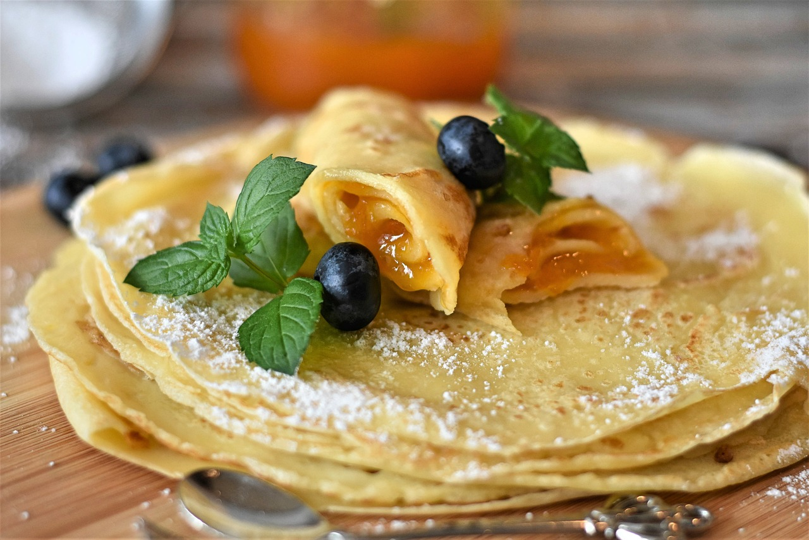

Pfannkuchen

Zubereitung
Die Eier mit dem Zucker cremig aufschlagen, dann mit der Milch verrühren. Nun Salz, Mehl und Backpulver dazugeben und alles zu einem glatten Teig rühren.
Danach ist es von Vorteil, den Teig etwas ruhen zu lassen, da das Mehl noch ausquillt. Dann 1 - 2 große Schöpfkellen Teig in eine auf mittlere Hitze
erhitzte, beschichtete Pfanne geben. Nach ca. 2 Minuten bilden sich kleine Bläschen, dann den Pfannkuchen einmal wenden und von der anderen Seite schön
goldbraun ausbacken.
Rezept erstellt von
Philip